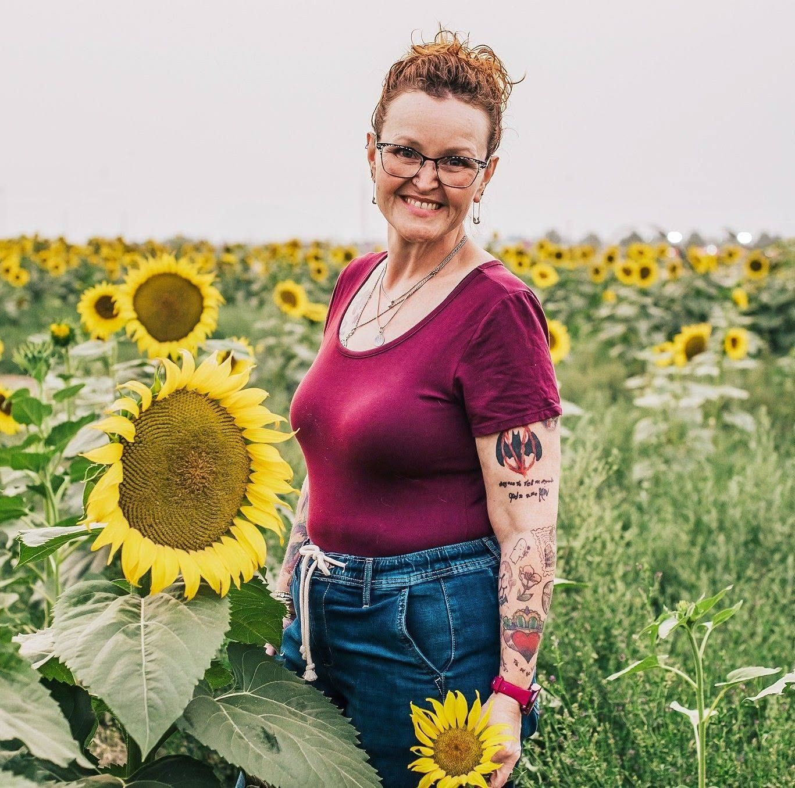
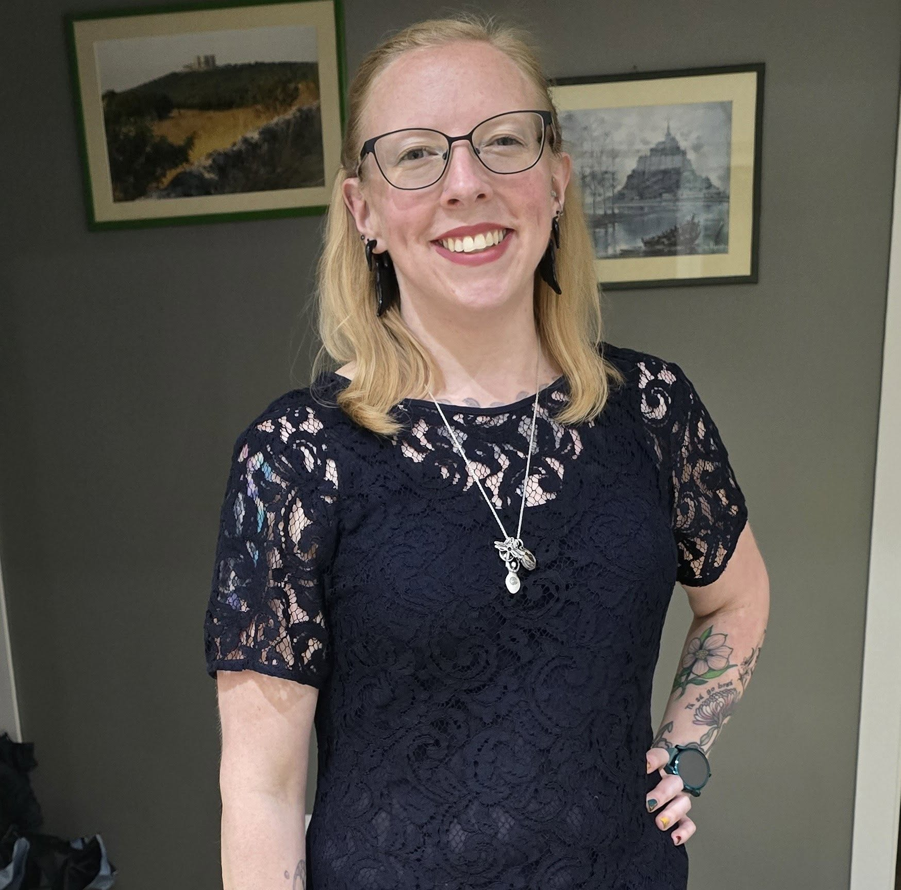
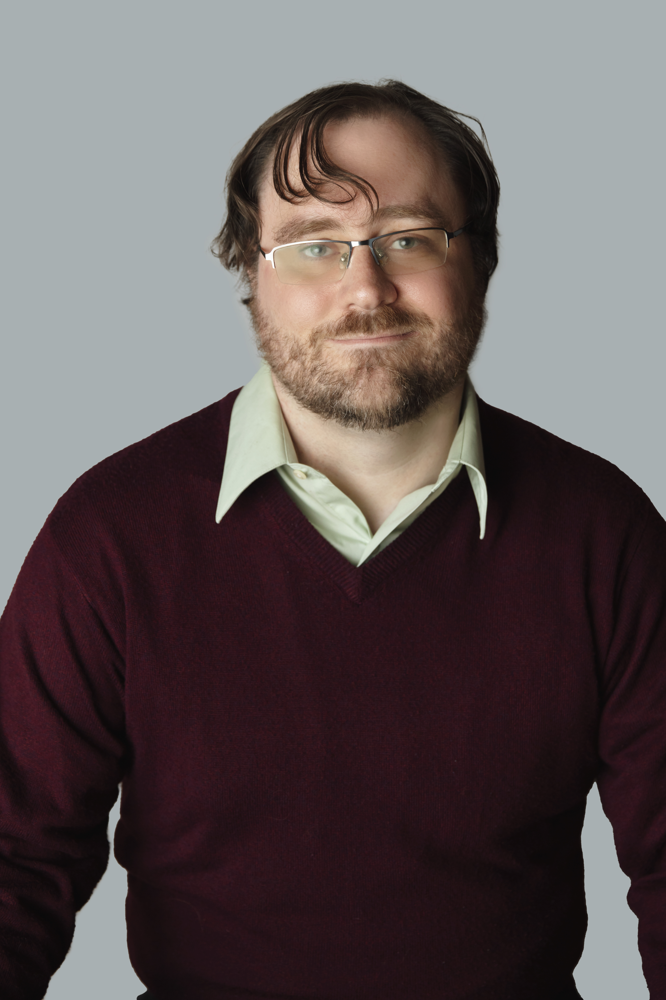

About Handle With Care
Handle With Care was created by Taylor Signs-McMurtry and Jenna Fountain
in 2026.
During a No Kings rally, Taylor was running a booth for Southern Idaho Pride.
During her time at the event she was greeted with kindness and care from the community.
There were many allies at the rally that wanted
to know how they could better help the queer community.
Taylor and Jenna have been safe spaces for their personal friends and family,
and with the need being present, they set out to create not just a program for
allies but a safe space for parents, families, faith leaders, and those wanting
to know more about the community and learn how best to support those they love.
🌈✨ Meet the Team 🌈✨

✨ Jenna Fountain ✨
Jenna (She/Her) is a fun, fiery redhead that would give you the
shirt off her back. Jenna has done many amazing things. She is a nurse,
has previously been vice-president of Southern Idaho Pride. She is the
store manager for Plant Therapy in the Magic Valley Mall and co-runs
Queer Cupboard with her wife Tiffany.
Jenna has been in the Magic Valley a long time and has quite the
life experiences, but she is a great listener and always tries to educate
people about the Queer Community with love and kindness. She loves spending
time with her wife, her many animals, and building connection in and with the community.

🦉 Taylor Signs-McMurtry 🦉
Taylor (She/They) was taught that her voice mattered and to use it,
along with asking "why not?" She took that to heart! She is a Coloradan
born and raised. She came to Idaho intending to not stay long and instead
found her life partner and has grown roots in Idaho.
She is a student at the College of Southern Idaho studying Network System
Technician, Cybersecurity and Programming, and Computer Support Technician.
She was a late-bloomer in her identity, but she is here and ready to help!
Taylor loves to spend time with her husband and their 2 children, and don't forget her
sweet golden Topaz! She loves connecting with the community and knows kindness is one of
the keys to living and bringing communities together.
❤️ Our Team's Support Team ❤️

🖤 Tiffany Fountain, Jenna's Wife 🖤
Tiffany (She/Her) grew up in Utah and has traveled all over the world. She met Jenna in 2017 at
Love Yourself event running seperate booths, and they were assigned right next to each other. One
sassy remark about bumping tables and soon they became inseperable. They were married in June of 2019,
and have done so much together. Tiffany loves to make jokes that people only know her as Jenna's wife,
but don't let that fool you! Tiffany has done a lot of amazing things, she love to crochets, reading, and animals.
She has her AAS in Cybersecurity and Programming, and is now training to be a dog groomer!

💙 Scot McMurtry 💙
Scot (He/Him) born and raised in Idaho, loves many things but most importantly the
Deseret Industries (DI), video games, his kids, Topaz, and last but certainly not least, Taylor.
When he moved to Pocatello to continue his education he started working at the DI and that is
where he met his favorite person in the world, Taylor. He was smitten, Taylor and Scot met in 2013,
and were married in June of 2014. Scot will tell you he won the lottery, he found his favorite
person, not only at the DI, but a gaming partner as well. He enjoys spending time with his wife,
his children, Topaz, writing, Mystery Science Theatre 3000, and being Dungeon Master for his DnD
campaigns.